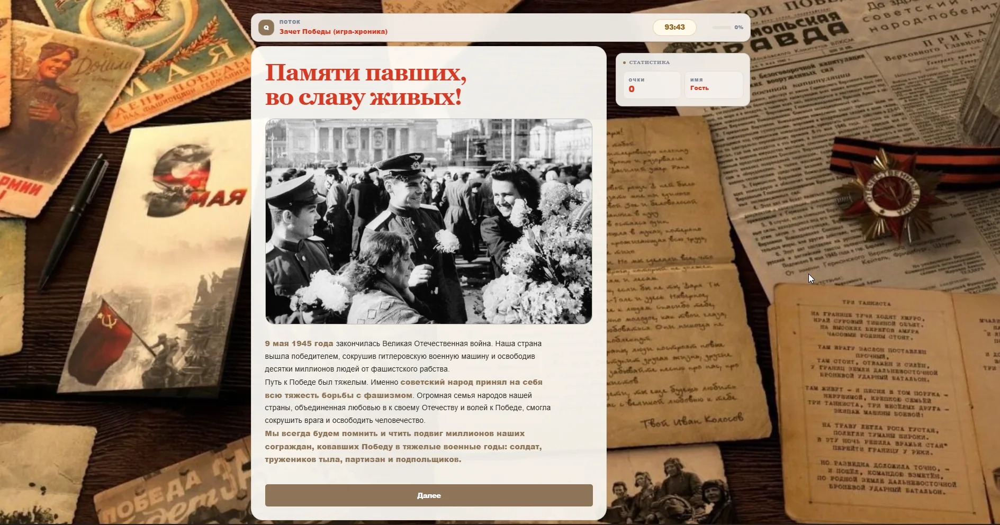
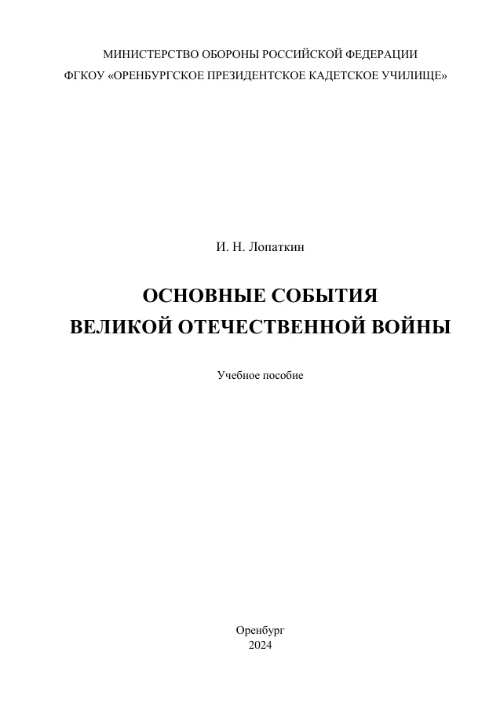

I.
Сталинград: битва за перелом
Сталинградская битва, борьба за стратегическую инициативу и начало коренного перелома в ходе войны.
Военно-историческая игра-хроника, созданная преподавателями Оренбургского президентского кадетского училища. Её участники изучают события 1941–1945 годов, проходят исторические маршруты и вместе принимают решения.
В учебной аудитории Оренбургского президентского кадетского училища кадеты и их родители обсуждают задания за ноутбуками. На экранах появляются карты, фотографии, штабные сообщения и вопросы о событиях Великой Отечественной войны.
В Оренбургском президентском кадетском училище состоялась командная военно-историческая игра «Зачёт Победы». В ней участвовали кадеты 4, 5, 7 и 8 учебных курсов вместе с родителями. Команды из двух-трёх человек получили 90 минут на выполнение 100 заданий, охватывающих основные события Великой Отечественной войны.
Фотографии мероприятия запечатлели внимательную, сосредоточенную работу команд. Кадеты и взрослые участники рассматривают изображения, обсуждают исторические обстоятельства и сообща выбирают ответы. Такая организация игры создаёт естественную среду для обмена знаниями между поколениями, совместного поиска и аргументированного обсуждения.
«Зачёт Победы» создан преподавателями истории и обществознания И. Н. Лопаткиным и Е. В. Некрытым. В основу положен авторский сценарий с несколькими историческими маршрутами, разнообразными заданиями и подробными пояснениями. Для реализации проекта используется цифровая платформа «Поток».

Так начинается знакомство с игрой. Архивные фотографии, газетные полосы, письма и исторические изображения создают атмосферу военного времени. Художественное оформление поддерживает содержание заданий и помогает участнику сосредоточиться на эпохе.
По сценарию игрок входит в состав условной оперативной группы. Ему поступают штабные распоряжения, донесения и сведения о положении на фронте. Необходимо восстановить хронологию событий, определить командующего, распознать военную технику, установить причины и последствия военных операций.
Каждое задание связано с конкретным эпизодом войны. Ответ влияет на количество набранных очков, а исторический комментарий раскрывает обстоятельства события, знакомит с героями и помогает увидеть связь между отдельными этапами Великой Отечественной войны.
На центральном направлении участники знакомятся с обороной Брестской крепости, боями в Белоруссии, Смоленским сражением и Московской битвой. Задания помогают установить последовательность событий и оценить их значение для хода войны.
Сталинградская битва, борьба за стратегическую инициативу и начало коренного перелома в ходе войны.
Курская битва, наступательные операции Красной Армии, освобождение территории СССР и европейских стран.
Заключительные операции, штурм Берлина и события победного мая 1945 года.
Начальные направления различаются содержанием, количеством и сложностью заданий. Участник может вернуться к началу игры, выбрать другой путь и познакомиться с дополнительными событиями военной истории. Все сюжетные линии постепенно соединяются в общую хронику, посвящённую главным этапам Великой Отечественной войны.
Участники определяют даты, названия операций, имена полководцев и другие ключевые факты по материалам игрового сценария.
Для решения необходимо проанализировать перечень сведений и установить несколько правильных вариантов, относящихся к конкретному сражению или операции.
Участник самостоятельно указывает фамилию героя, название города, вооружения или военной операции. Готовые варианты ответа отсутствуют.
Задания помогают соотносить военачальников и фронты, события и результаты, виды вооружения и количественные характеристики.
Текстовые и иллюстративные материалы знакомят с историческими обстоятельствами, подготавливают к следующему заданию и связывают эпизоды хроники.
Система баллов и тематических наград отмечает успехи участников и знакомит их с важнейшими страницами истории войны.
Исторический комментарий продолжает каждое задание.
После каждого ответа участник получает подробное историческое пояснение. Оно раскрывает обстоятельства события, рассказывает о судьбах людей, знакомит с документальными свидетельствами и устанавливает связь с другими этапами войны. В сценарии предусмотрен «учебный батальон». Участники, которым требуется дополнительное закрепление материала, выполняют пять вопросов и продолжают основной маршрут. Такой подход поддерживает интерес к изучению истории на протяжении всей игры.
Совместное участие родителей и кадет стало важной особенностью игры. В одной команде встретились разные поколения, объединённые интересом к истории Великой Отечественной войны. Участники изучали изображения, вспоминали даты и обсуждали события, стараясь найти обоснованный ответ. В состязании приняли участие кадеты 4, 5, 7 и 8 учебных курсов. На выполнение 100 заданий каждой команде отводилось 90 минут.
Игровой формат позволил соединить образовательную работу училища с семейным общением. Обсуждение исторических событий продолжалось в кругу кадет, родителей и педагогов, а общая цель требовала внимания, взаимопомощи и согласованных решений.
Видеоматериал передаёт атмосферу мероприятия в Оренбургском президентском кадетском училище. В кадре можно увидеть общий инструктаж, работу команд в аудиториях и обсуждение исторических заданий. Запись дополняет фотохронику проекта.

Фактическую основу «Зачёта Победы» составляет учебное пособие И. Н. Лопаткина «Основные события Великой Отечественной войны», изданное в Оренбурге в 2024 году. Книга знакомит читателя с важнейшими событиями 1941–1945 годов, последовательно рассматривает основные сражения, ход военных операций и итоги войны. Материал сопровождают карты, схемы, хронологические таблицы, сведения об исторических деятелях и словарь терминов.
Содержание пособия получило игровое воплощение. Участники устанавливают хронологию боевых действий, определяют полководцев и воинские соединения, сопоставляют исторические сведения и знакомятся с обстоятельствами важнейших сражений. Методическая основа обеспечивает содержательную последовательность всей игры.
Курс «Мы — народ-победитель» знакомит пятиклассников с ключевыми событиями Великой Отечественной войны, героизмом защитников Отечества и историческим значением Победы. Игра помогает закреплять изученное и расширять круг исторических представлений.
Курс реферирования и публичного выступления посвящён работе с материалами о Великой Отечественной войне, в том числе с пособием И. Н. Лопаткина. Кадеты учатся отбирать исторические сведения, выстраивать аргументацию и представлять результаты самостоятельной работы. Эти навыки востребованы при обсуждении игровых заданий.
«Зачёт Победы» занимает своё место в этой системе. Он объединяет знания, полученные на занятиях, навыки самостоятельной работы и опыт совместного обсуждения исторических событий. Благодаря участию родителей образовательное взаимодействие продолжается и за пределами учебного кабинета.
В «Зачёте Победы» приняли участие все довузовские образовательные организации Министерства обороны Российской Федерации. Общий цифровой формат объединил воспитанников военных училищ из разных регионов России и позволил обратиться к истории Великой Отечественной войны в рамках единого образовательного события.
Особое место в реализации проекта заняла игра с участием семей кадет Оренбургского президентского кадетского училища. Этот опыт показал широкие возможности командного формата: исторические задания становятся основой для содержательного общения, сотрудничества и совместного интеллектуального труда.
Кадеты 4, 5, 7 и 8 учебных курсов участвовали вместе с родителями. Команды по два-три человека отвечали на 100 вопросов в течение 90 минут.
«Поток» представляет собой веб-платформу для создания интерактивных образовательных историй. С помощью визуального редактора преподаватель связывает вопросы, информационные экраны, условия, баллы и переходы в единый сценарий. Для каждого этапа можно подобрать изображения, текстовые материалы и звуковое сопровождение.
Возможности платформы позволяют выстраивать несколько исторических маршрутов, задавать условия получения наград и автоматически проверять ответы. Готовую игру можно открыть в браузере, что удобно для занятий, командных мероприятий и дистанционного участия.
Цифровая схема «Зачёта Победы» включает 954 элемента и 1 331 логическую связь. Среди них находятся 142 узла с заданиями различных типов, а также информационные экраны, проверки условий, начисление баллов и переходы между сюжетными ветвями.
Внутренняя структура сценария позволяет участнику последовательно двигаться по исторической хронике. Преподаватель при этом сохраняет возможность дополнять материалы, изменять задания и создавать новые тематические маршруты.
Преподаватель истории и обществознания Оренбургского президентского кадетского училища. Соавтор «Зачёта Победы», автор учебного пособия «Основные события Великой Отечественной войны» (Оренбург, 2024).
Преподаватель истории и обществознания Оренбургского президентского кадетского училища. Соавтор интерактивной военно-исторической игры «Зачёт Победы».
Подготовка интерактивных хроник, посвящённых отдельным военным операциям, памятным датам, биографиям полководцев и судьбам участников войны.
Разработка вариантов игры для разных возрастных групп с учётом уровня исторической подготовки, объёма материала и сложности заданий.
Создание методических рекомендаций и обмен опытом проведения командных и семейных исторических игр между образовательными организациями.
«Зачёт Победы» объединяет содержательную историческую подготовку, современные образовательные технологии и живое общение между поколениями. Опыт Оренбургского президентского кадетского училища демонстрирует возможности интерактивной игры для изучения Великой Отечественной войны и сохранения памяти о её героях.
Перейти на сайт премии ↗